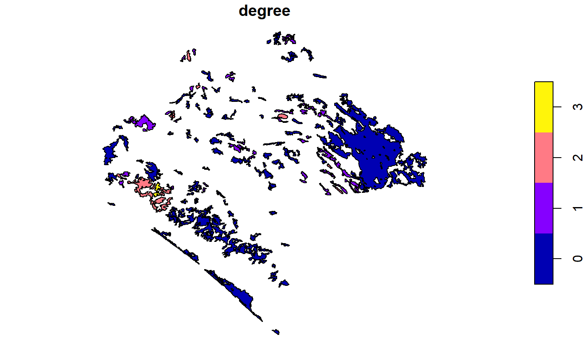
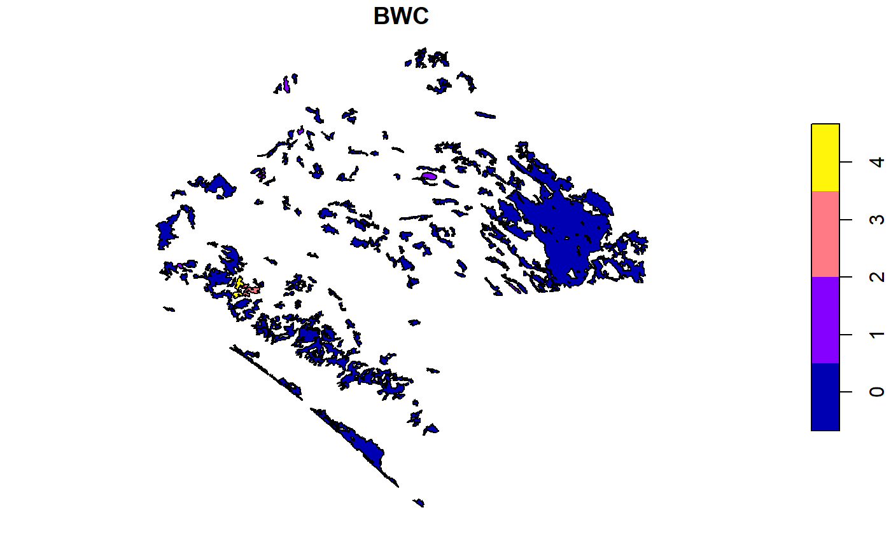
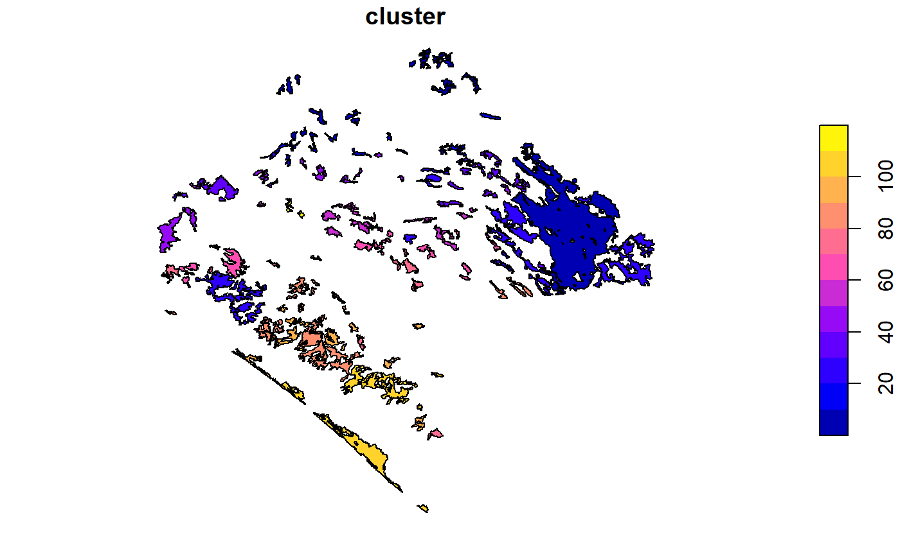
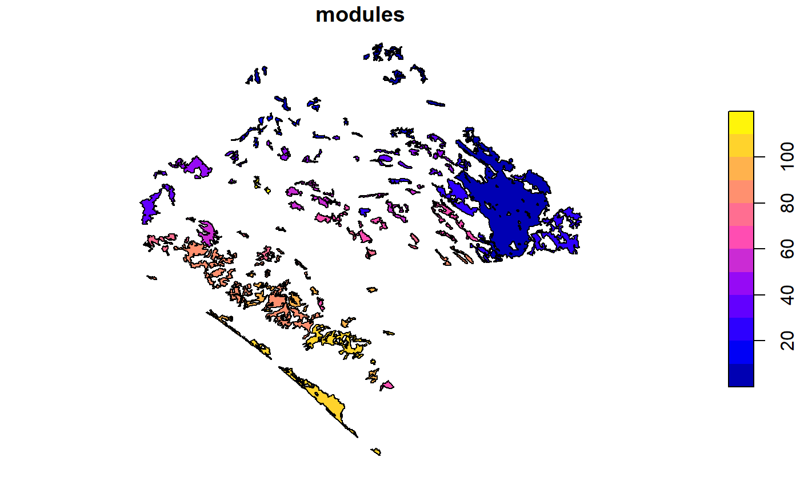

Use this function to calculate centrality measures. under one or several distance thresholds.
MK_RMCentrality( nodes, distance = list(type = "centroid"), distance_thresholds = NULL, binary = TRUE, probability = NULL, rasterparallel = FALSE, write = NULL )
| nodes | Object of class sf, SpatialPolygonsDataFrame or raster. It must be in a projected coordinate system. If nodes is a raster layer then raster values (Integer) will be taken as "id". |
|---|---|
| distance | list. Distance parameters. For example: type, resistance,or keep. For "type" choose one of the distances: "centroid" (faster), "edge", "least-cost" or "commute-time". If the type is equal to "least-cost" or "commute-time", then you have to use the "resistance" argument. To see more arguments see the ?distancefile. |
| distance_thresholds | numeric. Distance or distances thresholds to establish connections (in meters). For example, one distance: distance_threshold = 30000; two or more specific distances: distance_thresholds = c(30000, 50000); sequence distances: distance_thresholds = seq(10000,100000, 10000). |
| binary | logical. Binary metrics, it only considers the distance thresholds to establish if a pair of nodes is (1) or not connected (0). Probability argument is not necessary. |
| probability | numeric. Connection probability to the selected distance threshold, e.g., 0.5 that is 50 percentage of probability connection. Use in case of selecting the "PC" metric. If probability = NULL, then it will be the inverse of the mean dispersal distance for the species (1/α; Hanski and Ovaskainen 2000). |
| rasterparallel | logical. If nodes is "raster" then you can use this argument to assign the metrics values to the nodes raster. It is useful when raster resolution is less than 100 m2. |
| write | character. Write output shapefile. It is necessary to specify the "Folder direction" + "Initial prefix", for example, "C:/ejemplo". |
This function implements Patch-Scale Connectivity or Centrality Measures. Radial measures: degree, strength (using probability argument, for weighted graphs), eigenvector centrality (eigen), and closeness centrality (close). Medial measures: betweenness centrality (BWC), node memberships (cluster), and modularity (modules, using probability argument). The function builds on functions out of Csardi’s ’igraph’ package.
Borgatti, S. P., & Everett, M. G. (2006). A Graph-theoretic perspective on centrality. Social Networks, 28(4), 466–484. https://doi.org/10.1016/j.socnet.2005.11.005 Hanski, I. and Ovaskainen, O. 2000. The metapopulation capacity of a fragmented landscape. Nature 404: 755–758.
#>#> [1] 142#Two distance threshold, centrality_test <- MK_RMCentrality(nodes = vegetation_patches, distance = list(type = "centroid"), distance_thresholds = c(10000, 100000), probability = 0.05, write = NULL)#> Warning: At centrality.c:2784 :closeness centrality is not well-defined for disconnected graphscentrality_test#> $d10000 #> Simple feature collection with 142 features and 7 fields #> geometry type: POLYGON #> dimension: XY #> bbox: xmin: 3340120 ymin: 322869.6 xmax: 3739484 ymax: 696540.5 #> CRS: +proj=lcc +lat_1=17.5 +lat_2=29.5 +lat_0=12 +lon_0=-102 +x_0=2500000 +y_0=0 +datum=WGS84 +units=m +no_defs #> # A tibble: 142 x 8 #> id degree eigen close BWC cluster modules geometry #> <int> <dbl> <dbl> <dbl> <dbl> <dbl> <dbl> <POLYGON [m]> #> 1 1 0 2.30e-17 4.99e-5 0 1 1 ((3676911 589967.3, 3676~ #> 2 2 0 2.30e-17 4.99e-5 0 2 2 ((3558044 696202.5, 3557~ #> 3 3 1 0. 5.03e-5 0 3 4 ((3569169 687776.4, 3569~ #> 4 4 0 2.30e-17 4.99e-5 0 4 3 ((3547317 685713.2, 3547~ #> 5 5 1 0. 5.03e-5 0 3 4 ((3567471 684357.4, 3567~ #> 6 6 0 2.30e-17 4.99e-5 0 5 5 ((3590569 672451.7, 3590~ #> 7 7 0 2.30e-17 4.99e-5 0 6 6 ((3570789 670959.4, 3570~ #> 8 8 1 0. 5.07e-5 0 7 7 ((3440118 666273.2, 3440~ #> 9 9 1 0. 5.07e-5 0 7 7 ((3451637 671232.4, 3451~ #> 10 10 2 0. 5.07e-5 1 7 7 ((3444396 671675.7, 3444~ #> # ... with 132 more rows #> #> $`d1e+05` #> Simple feature collection with 142 features and 7 fields #> geometry type: POLYGON #> dimension: XY #> bbox: xmin: 3340120 ymin: 322869.6 xmax: 3739484 ymax: 696540.5 #> CRS: +proj=lcc +lat_1=17.5 +lat_2=29.5 +lat_0=12 +lon_0=-102 +x_0=2500000 +y_0=0 +datum=WGS84 +units=m +no_defs #> # A tibble: 142 x 8 #> id degree eigen close BWC cluster modules geometry #> <int> <dbl> <dbl> <dbl> <dbl> <dbl> <dbl> <POLYGON [m]> #> 1 1 32 0.328 0.00307 30.1 1 1 ((3676911 589967.3, 367693~ #> 2 2 22 0.257 0.00309 3.03 1 1 ((3558044 696202.5, 355797~ #> 3 3 18 0.204 0.00301 0.472 1 1 ((3569169 687776.4, 356914~ #> 4 4 26 0.303 0.00317 8.87 1 1 ((3547317 685713.2, 354736~ #> 5 5 23 0.274 0.00311 1.85 1 1 ((3567471 684357.4, 356738~ #> 6 6 26 0.311 0.00313 3.17 1 1 ((3590569 672451.7, 359009~ #> 7 7 30 0.365 0.00326 7.51 1 1 ((3570789 670959.4, 357086~ #> 8 8 26 0.299 0.00325 1.23 1 2 ((3440118 666273.2, 344037~ #> 9 9 24 0.271 0.00315 2.05 1 2 ((3451637 671232.4, 345161~ #> 10 10 26 0.299 0.00325 1.23 1 2 ((3444396 671675.7, 344471~ #> # ... with 132 more rows #>